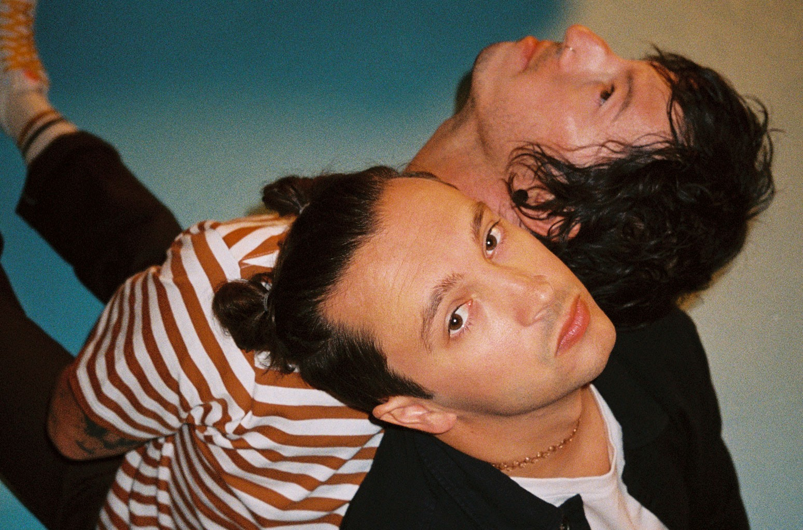

Twenty One Pilots
Twenty One Pilots is an American musical duo from Columbus, Ohio. The band was formed in 2009 by lead vocalist Tyler Joseph along with Nick Thomas and Chris Salih, both of whom left in 2011. Since their departure, the line-up has consisted of Joseph and drummer Josh Dun.